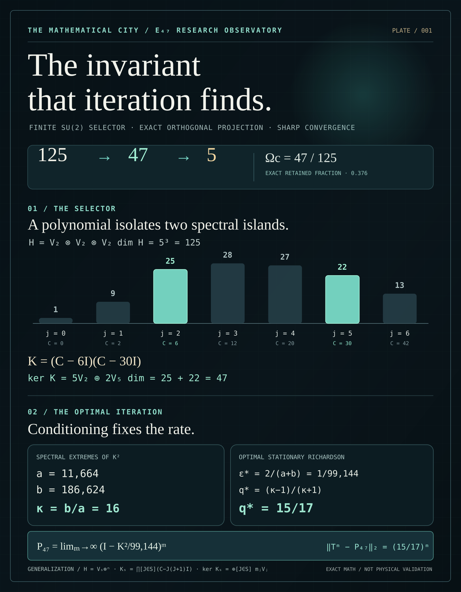

The shape
of what
survives.
A 125-dimensional carrier. A precisely selected 47-dimensional spectral kernel. An expanding city of independently inspectable mathematics, machines, and research.
One spectrum.
Two islands.
A Casimir polynomial selects the spin-2 and spin-5 isotypic components from the full triple tensor product. Seven sectors enter; exactly two remain. The graphic is computed from sector dimensions, not an arbitrary coloring of cube cells.
SU(2) triple tensor decomposition
V₂⊗³ ≅ V₀ ⊕ 3V₁ ⊕ 5V₂ ⊕ 4V₃ ⊕ 3V₄ ⊕ 2V₅ ⊕ V₆
Spin 2 · C=6 · 5 copies · 25 dimensions · retained
Show the algebraic proof structure
The tensor product decomposes into total-spin irreducible representations with multiplicities (1,3,5,4,3,2,1). Since C acts as j(j+1) on Vⱼ, K vanishes precisely on the sectors with eigenvalues 6 and 30. Their dimensions are 5(2·2+1)=25 and 2(2·5+1)=22.
Contraction instrument
T = I − εK²
ε = 1/99,144
MAXIMUM COMPLEMENTARY CONTRACTION FACTOR: 15/17
Bound = (15/17)ⁿ
Open derivation and evidence boundary
On the five complementary Casimir sectors, K² has eigenvalues 32400, 12544, 11664, 19600, and 186624. Choosing ε=1/99,144 balances the extreme contraction factors, giving max |1−ελ| = 15/17. The plotted residual is computed for a representative initial vector whose sector squared norms are proportional to sector dimensions; it is not a laboratory measurement.
The invariant
that iteration finds.
A code-generated publication plate for the exact E₄₇ selector, its sharp optimal Richardson convergence factor, and the arbitrary-spin generalization.


A city of
instruments.
Your existing laboratory identities become navigable scientific destinations. The artwork is sourced from the City's established Notion visual system; live modules retain their independent addresses.
CYAN = LIVE · BRONZE = Λ-GHOST
MINT = KERNEL / CERTIFICATE
IMAGES ≠ EVIDENCE STATUS
The original City assets, mathematical plates, and laboratory family are part of the research itself. This site supplies a navigable editorial frame around them, not a replacement visual authority.
Enter the visual archive ↗CITY LIVE / 23 INSTRUMENTS ↗ / NATIVE INSTRUMENT DIRECTORY ↗
Every claim has
a place to go.
The complete 341-row atlas, transformed from a cramped mobile table into searchable, purpose-built source cards. Original classifications, dates, roles, and links remain intact.
Loading source index…
Source ledger: Original Google Sheet ↗ · Download entire JSON snapshot ↓
Follow the evidence,
not the decoration.
Cross-platform source relationships retain distinct categories: owner publication, external submission, and documented third-party responses. They are not all evidence of adoption.
Select a node to open its original record. Layout represents link structure, not quantitative impact or rank.
Measurement,
without mythology.
Repository-level public engagement and an explicitly historical service-log snapshot. Events are not visitors; absent traffic data is unmeasured, never zero.
Historical snapshots shown. Scheduled GitHub API refresh is separate from live website visitor analytics.
Independent tools.
Shared mathematics.
Follow the work into original interfaces, GitHub repositories, mathematical proofs, and preserved corrections. Each instrument remains individually maintained.
Spectral Observatory ↗
CANONICAL MATH / VISUAL INTERFACE
Proof Monorail ↗
LEAN / COQ / PROOF ARTIFACTS
City Visual Grammar ↗
PROVENANCE / CITY DESIGN SYSTEM